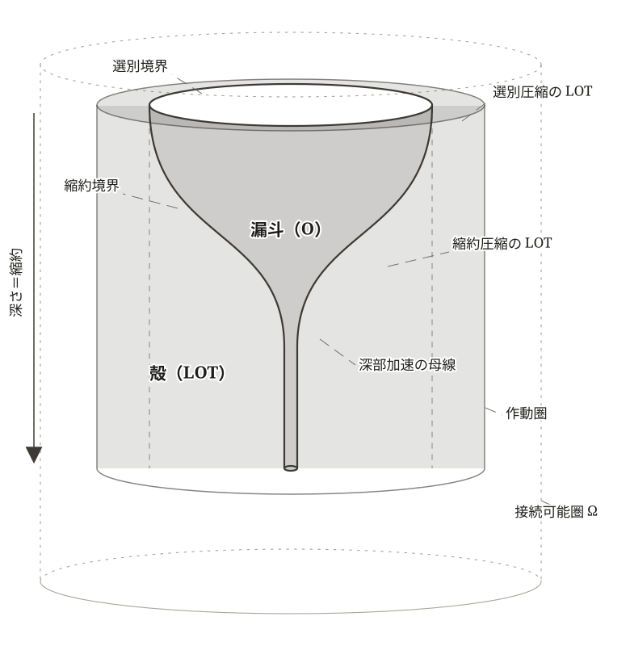

第17章 文明の出力の幾何——漏斗モデル
三つめの問いに入る。
どの規模まで、保てるか。規模の軸である。
「『我ら』の境界と因果の創発」（第15章）が、結果はいつ・誰に返るかを問い、これを非対称性因果の四類型として構造命題化した。「不等式の動性」（第16章）が、重心はどこにあるかを問い、FOEモデルとして展開した。この第三の問い——規模の問い——には、本章から「どの規模まで、保てるか」（第19章）までの三章で応じる。本章が担うのは、その最初の仕事である——文明の出力が立つ場の幾何を、一つのモデルとして取り出すこと。
「どれだけの大きさの『我ら』を、どれだけの時間、支えうるか」——この問いは、二つの量を区別することを要求する。文明が現に支えている規模と、文明が将来にわたって維持できる規模である。
両者は、構造的に同じではない。「大きくなるほど、支えにくい」という傾き（「残存と継承の違い」第14章 §14-6）を思い出せばよい。装置を支えつづける作業は、運ぶ範囲が大きくなるほど薄まる方向に圧力を受ける。たとえば、知識ストックを索引で参照する仕組みの維持、世代を越えてその索引を反復することは、巨大な装置では難しくなっていく。現に支えている規模が伸びていることは、将来維持できる規模が保たれていることを意味しない。
その差は、何から生まれるのか。
差を測るには、まず、伸びている側から押さえるほかない。規模を現に支えているのは、文明の出力である。その出力は、そもそも、どこから来るのか。
§17-1 大きな出力はどこから来るか
文明は、ひとりひとりの人間の能力と比べれば、はるかに大きな桁外れの出力を出している。一人の人間が生涯で動かせるエネルギーは、その人間の肉体だけで言えば限られている。だが、文明が引き出す出力は、それを遥かに超える。工場、都市、国家——文明を形づくるものは、いずれも、人間個人の能力の総和を桁違いに上回る規模で、物資・エネルギー・情報を動かしている。
なぜこんなことが可能になったのか。
その答えは、出力の規模を決める二つの軸として書ける——急峻な傾斜と大量の流れである。両者の地は、本書がすでに別の角度から取り出した二つの装置のうえにある。一つは有効勾配の増大（「圧縮から創発する世界」第2章 §2-4）。圧縮によって自由度が絞られるとき、残された自由度の上で勾配が急峻に立ち上がる効果である。もう一つは「操作能力的我ら」の範囲（「不等式の動性」第16章 §16-1）。技術・組織・物理基盤を通じて文明の操作が及ぶ輪郭である。
急峻な傾斜——同じ流れから方向づけられた仕事
有効勾配の増大（「圧縮から創発する世界」第2章 §2-4）を、文明の規模の軸から読み直す。
圧縮——世界の差異のうちある軸で「内」と「外」を分ける——が立ち上がると、残された自由度の上で勾配が急峻になる。同じ流れから、より方向づけられた仕事が引き出せるようになる。レンズが、四方に散らばる光のうち一点に収束する経路だけを取り出せば、集中させた光は放散したままよりも遥かに強い熱を生む。
文明は、この圧縮を多段に積み重ねる。森林からただ薪を採るのではなく、材木として規格化し、造船用に選別し、設計図に沿って組み上げる。多段の圧縮が重なるたびに、有効勾配は何段にも急峻化していく。文明が引き出す大きな出力の片側は、この急峻な傾斜にある。
大量の流れ——被覆を広げて Flux を引き込む
もう一つは、流れの量そのものである。同じ急峻さの傾斜でも、その上を流れる Flux の量が多ければ、引き出される仕事の総量は大きくなる。
「操作能力的我ら」の範囲（「不等式の動性」第16章 §16-1）とは、文明が技術・組織・物理基盤を通じて現実に働きかける、操作の及ぶ輪郭であった。本書はこれを短く被覆と呼ぶ。Flux（同章 §16-2）は、Ω 内を自然にドリフトする局在領域として、被覆とは独立に動く（命題 FOE-1）。被覆が広がれば、その被覆と Flux の局在領域とが重なる範囲——すなわち被覆の内側に流れ込む素材の量——が増えうる。
文明は、被覆を広げることで、より大量の Flux を引き込んできた。広い地域からの素材、より深い地層からの資源、より遠い場所からの情報、地球外のフロンティアの模索——被覆が広がるほど、その内側に流れ込む Flux の量は増えていく。被覆が広がる経路は、一つではない。能動的に O が広げる場合もあれば、外側の Flux 自体の動性で広がっていく場合もある。いずれにせよ、被覆範囲が広がれば、その内側に取り込まれる Flux の量も、それに応じて増える。
深さと広がりは別の論理で強くなる
急峻な傾斜と大量の流れは、ともに O の作動だが、別の論理で動く。
急峻な傾斜は、O の深さ方向——既存の素材をどう圧縮するかの作動。多段の圧縮を積み重ねて、有効勾配を急峻に立ち上げる。
大量の流れは、O の広がり方向——何を新たに迎え入れるか、どこまで被覆を広げるかの作動。新しい素材の領域に手を伸ばし、Flux の流入経路を確立する。
広がり方向の被覆は、FOEモデル（第16章）でも F と O との重なり（FOE または FO-）として表現されていた。
ここでいう広がりは、被覆が現実のどこまで届くかであって、「世界を切り取る幾何学」（第1章 §1-3）が解像度と対にした広がり——T空間が保存している方向の多様さ——ではない。あちらの対は、深さの側に畳まれている——方向を絞れば残った自由度で勾配が立つ（第2章 §2-4）のが、深さを立てるということだからである。二つの軸が互いを削らずに掛かるのは、広がりがそれと別の軸のうえで動くからである。
二つの軸の積として、文明の出力の規模が決まる。急峻な傾斜が立ち上がり、大量の流れがその上を流れる。これが、文明が桁外れの出力を出せる機構である。この二軸の機構は、引き出せる仕事の量が有効勾配の急峻さと Flux の流量との積で規定されるという命題——命題 WORK-1（仕事の引き出し）（第2章 §2-4）——の、文明レイヤーでの現れにほかならない。
§17-2 文明の出力を立てる、保つ
だが、これは規模の問いの第一——出力がどこから来るかの答えに過ぎない。規模の問いの第二——その出力をいつまで保てるか——は、立てたものを保つという別の論理を要求する。
圧縮——選別構造を立ち上げる作動
文明が世界に対して操作するとき、何が起きているか。
森林を例にとろう。文明が森林に対して操作するとき、森林は「造船のための材木」となりうるし、「家屋の建材」となりうるし、「薪」となりうるし、「菌糸の苗床」となりうる。森林という素材には、一つのものになりうると同時に、別のものにもなりうる、多重の可能性が含まれている。文明は、これらの可能性のなかから、ある軸——たとえば「造船材」——を採用する。
ここで重要なのは、採用されなかった可能性は、消滅したわけではないということである。森林という素材が現に持っていた「菌糸の苗床」としての性質、「生態系を担う」という性質——これらは、宇宙論的にはなお作動しつづけている。失われたのは、当該系（文明）の判断回路がそれらを参照する経路である。
圧縮とは、情報を物理的に消す操作ではない——観察者（系）が、参照経路を引く操作である。失われるのは、参照経路だけ。情報そのものは、なお宇宙論的な地に保持されている。
立てるコスト——最初は E が払う
選別構造を立ち上げるには、コストがかかる。何を「内」とし、何を「外」とするかを定め、その境界を維持できる装置を構築する——この作業には、仕事が要る。
このコストを、なぜ実存（E）が払うのか。選別構造の境界を引くとは、「我ら」の輪郭を定めることに等しい。何を「我ら」として引き受け、何を「我ら」の外に置くか。この境界の引き直しは、引受の不等式が立つ実存の側——「実存的我ら」（E）——の作動である。「実存先行」（第15章 §15-6）——E が先に枠を立て、操作がその内側で動く順序——のことである。
「立てるコスト」は、一回的な初期投資である。状態 A から状態 B へ系を運ぶ、非平衡な作動。新しい言語を立ち上げる、新しい制度を確立する、新しい技術体系を組み上げる——これらは、立てるときに E が払うコストである。
ここで、一つの留保を置く。「立てるコストは E が払う」というのは、漏斗の浅い領域——素朴な情景での前提である。漏斗の深い領域、とくに自己言及的な層では、操作（O）が自ら立てるコストを払い、E への呼びかけを経ずに進化していく経路がある。この経路では、「選別構造は E が立てるもの」という素朴な前提が崩れる。
保つコスト——散逸対抗の継続投資
立てた選別構造は、放置すれば散逸する。
動いている系の同一性は再生産であって保存ではない。構造は時間とともに散逸する。系の維持には、散逸に対抗する継続的な仕事の投入が要る。
ダムを思い描いてみよう。コンクリートの巨大な構造物は、建てれば終わりではない。劣化を補修し、堆積物を浚渫し、安全性を点検しつづけなければ、ダムは時間とともに機能を失う。立てたあとに、保つ仕事が要る——この仕事のコストを、本書は保つコストと呼ぶ。
文明の選別構造も同じである。言語の継承、教育の反復、儀礼の更新、制度の維持、記録の保全、HIAM の作動——これらが、文明における保つコストの類型である。誰もその言葉を語らなければ、言語は継承されない。教える者と学ぶ者がいなければ、教育は止まる。儀礼は反復されなければ、制度は更新されなければ、記録は参照されなければ、それぞれの態様で失われていく。文明が立てた選別構造の枠組みは、時間とともに散逸する。
保つコスト要求（中核命題-1）は、規模の問いに直接効く。漏斗を深く彫り込むほど、その内側を保つ作業も重くなる——深い圧縮ほど、保つコストが膨らむ。
立てるコストと保つコストは別物
| 立てるコスト | 保つコスト | |
|---|---|---|
| 性格 | 一回限りの初期投資 | 継続的・反復的 |
| 対抗するもの | 非平衡を新たに作る | 散逸（熱力学第二法則） |
| 量の特徴 | 大きいが有限 | 小さいが無限に続く |
| 失敗の現れ方 | 立たない | 立った後に崩れる |
両者は別の論理で動く。立てられても保持に失敗すれば、構造は時間とともに崩れる。
命題 FUNNEL-1——保つコストの非自動性
ここに、文明レイヤーに固有の一つの構造が立つ。
物理基底のレイヤーでは、保つコストの不払いは、即座に系の崩壊として現れる。星の核融合が止まれば、その瞬間に放射圧は消え、星は崩壊する。化学反応の維持コストが切れれば、反応は止まる。
生命・生態系のレイヤーでは、保つコストは進化的に獲得された機構として、淘汰圧の中で強制される。代謝コストを支払えない個体は、自然選択によって除去される。保つコストの不払いは、その系の継続を許さない。
しかし、文明レイヤーは違う。文明は表象能力——時間的・空間的に離れた事象を操作する能力——を持ち、保つコストを未来へ、下位レイヤーへ、系内の他者へ転嫁できる（「圧縮から創発する世界」第2章 §2-6）。本来は自分が払うべき保つコストを、別の主体に押し付けることで、形式的には「払われている」状態を維持しながら、実質的には誰も払っていない状況を作り出せる。
残存と継承の違い——保つコスト不払いの帰結
命題 FUNNEL-1 の帰結を、「残存と継承の違い」（第14章 §14-6）の語で読み直そう。
残存は、保つコストが払われないまま、形式的に残っている構造である。建物は立っているが、内部の構造は腐食している。制度は記載されているが、実質的には作動していない。記録は保管されているが、誰もそれを参照する経路を持たない。
継承は、保つコストが払われつづけて、構造が動的に再生産されている状態である。言語が世代を越えて伝えられ、教育が反復され、儀礼が更新され、制度が維持される。継承されているものだけが、次の世代に向けて「動いている系」として保たれる。
文明は、その表象能力によって、残存と継承の差を見えにくくする。形式上は構造が残っているように見えても、保つコストが切れていれば、それは継承ではなく残存である。このとき、保つコストは、まるごと切れるとは限らない。内部整合の再生産——保管や記載——が続いていても、内容を Flux に対して再確認しつづける支払い——接地コスト——が抜ければ、構造は試されないまま形式だけを残す。残存と継承を分ける急所は、この支払いにある。残存の構造は、いずれ閾値を超えて崩れる。非線形回収因果（第15章 §15-7）が立ち戻る瞬間まで、当該系の判断回路には現れない。
中核命題-1 と命題 FUNNEL-1 の合流——残存はするが、継承されない
「現に支えている規模が伸びていることは、将来維持できる規模が保たれていることを意味しない」——「どの規模まで、保てるか」という問いへのこの見通しは、中核命題-1 と命題 FUNNEL-1 の組み合わせから出てくる。
文明は漏斗を深く彫り、Flux を引き込むことで、大きな出力を立てる（§17-1）。立てる作業は、浅い領域では E が払う。だが、深く彫れば彫るほど、保つコスト要求は膨らむ（中核命題-1）。そして、文明レイヤーでは保つコストは払われつづけるとは限らない（命題 FUNNEL-1）。漏斗の中身は、保持されないまま、形式的に残る——残存はするが、継承されない。
ここで、ここまでの論証を、本書の中核命題として束ねておく。第15章の非対称性因果の四類型と、本節の命題 FUNNEL-1 である。
§17-3 漏斗モデル——FOEモデルの O 軸を立体化する
急峻な傾斜と大量の流れ、圧縮と有効勾配、立てるコストと保つコスト、命題 FUNNEL-1——ここまでの装置は、一つの幾何モデルとして可視化できる。本書はこれを漏斗モデルと呼ぶ。
FOEモデルに深さを加える
漏斗モデルは、FOEモデル（「不等式の動性」第16章）の拡張である。FOEモデルは、流動（F）・操作能力的我ら（O）・実存的我ら（E）の三項を二次元のマップとして配置し、引受の不等式の動性を読み取る装置だった。
漏斗モデルは、この FOEモデルの O 軸を立体化したものである。O は、平面方向の被覆範囲（広がり）と、深さ方向の圧縮（彫り込み）の二軸の作動を持つ。漏斗モデルが描くのは、この O の深さ方向の構造である。広がり方向（F の流入経路）は、「不等式の動性」（第16章）の FOEモデルと「空間的不安定」（第20章）が扱う範囲である。
漏斗モデルが描くのは O だけの射影像である。F と E は別の輪郭として漏斗モデルには直接書き込まれない（第19章 §19-3 で重ねる）。
作動圏——O の作動が因果を走らせる範囲（内側の円柱）
漏斗モデルの中心的な領域は、円柱として描かれる。本書はこれを作動圏と呼ぶ。接続可能圏 Ω が「原理的に接続しうる」範囲を画するのに対し、O の作動が「現に作動している」範囲を画する円柱である。
作動圏は、O の作動が因果を現に走らせている範囲を画する立体である。具体的には、O の作動が現に走査する幅を底面とし（その内側に、選別が「これは別ものだ」と取り上げた範囲——漏斗の上面の楕円——が開く）、O の縮約が及ぶ深さを高さとする円柱として立つ。
作動圏の内部には、O が実際に参照している領域（漏斗の内部）と、O が及ぼした因果のうち参照経路を持たない領域（殻＝LOT）とが含まれる。両者ともに因果は走っているが、O から見て参照可能か否かが分かれている。
接続可能圏 Ω——作動圏の外側にある潜在的接続範囲
作動圏の外側、なお系が原理的に到達しうる範囲が接続可能圏 Ω（「LEFFLAとLOT」第3章 §3-2）である。Ω は外側のより大きな円柱として描かれる。
作動圏は Ω の真部分集合である——作動圏 ⊂ Ω。Ω は、当該系の選別構造のもとで原理的に接続しうる状態空間の全体を画する。作動圏は、その Ω のうち、現に O の作動が因果を走らせている部分に限られる。
Ω と作動圏の差分——Ω の内側で、まだ O が因果を走らせていない領域——は、潜在的接続範囲であって、現実の因果はまだ走っていない。O が被覆を広げ、新たな素材に手を伸ばせば、その分だけ作動圏は Ω の中で拡大する。Ω は O とは独立の地形である。Ω そのものは、当該系の引受（E）からも独立で、その内部にあるものは宇宙論的には作動しつづけている。
なお、Ω の縁がおよそ動かないわけではない。環境の側で接続可能性の条件が書き換えられれば、系が何もしなくても縁は動く（「LEFFLAとLOT」第3章 §3-2）。系の側から動かす道は一つに限られる——選別構造そのものを改変することであり、これは文明レイヤーに固有の能力である（第15章 §15-3）。そしてそれも、E→O→Ω の迂回を経る。引受（E）が Ω の縁を直接書き換えることはない。
なお Ω の外側——そもそも接続不能な領域——は、本章では中心的に扱わない。
漏斗——O の被覆範囲
作動圏の上面から、O が彫り込んでいくのが、漏斗である。
漏斗は、O の被覆範囲を立体化したものである。漏斗の上面の楕円は O の二次元射影の境界——O が「これは別ものだ」と分節して取り上げた範囲の縁を画する。漏斗の内部は、O が及び、操作の対象として現に参照されている領域である。
漏斗は、上面では広く、深部に向かうほど狭くなる。これは、圧縮が多段で進むことを表す。最初の選別（伐採するか否か）では、漏斗はまだ広い。次の縮約（材木として加工するか否か）でさらに狭くなる。多段の縮約を経て、深部では「造船材」という一軸まで絞り込まれる。
漏斗の上面の楕円が引かれる根拠は選別（第2章 §2-4）であり、漏斗の側面壁が引かれる根拠は縮約（第2章 §2-4）である。本書は前者を選別境界、後者を縮約境界と呼ぶ。両者は別の操作で、それぞれ別の機序で LOT を副生する。
殻——LOT 副生領域
作動圏の壁と漏斗の壁とのあいだの領域が、殻である。作動圏という円柱から漏斗という彫り込みを差し引いた、リング状に残る肉厚の部分——それが殻である。
殻は、O が及ばない領域——LOT（「LEFFLAとLOT」第3章 §3-2）——に対応する。殻は、選別境界をそのまま真下へ降ろした面によって、二つに分かれる。
- 選別境界の外側——O が選別で取り上げなかった領域。選別圧縮の LOT
- 選別境界の内側で、縮約境界の外側——O が選別では取り上げたが、縮約で潰した領域。縮約圧縮の LOT
両者とも O から見れば LOT だが、構造機序が異なる。中核命題-1（「LEFFLAとLOT」第3章 §3-3、圧縮の二面の不可分性）が、両者の同時副生を与えている。O が深く彫り込むほど、殻は同じ強度で膨らむ。
重要な点を繰り返す。殻の領域は、作動圏の中にあって失われていない。宇宙論的には作動しつづけている。失われたのは、当該系の判断回路がそれを参照する経路だけである。
四つの領域の対応関係
漏斗モデルが描く領域は、内側から外側へ四層に分かれる。
- 漏斗（O の被覆範囲）——上面の楕円が選別境界、側面壁が縮約境界、内部が O が及ぶ参照可能領域
- 殻（LOT）——O が及ばない領域。選別境界の外側（選別圧縮 LOT）と、選別境界の内側・縮約境界の外側（縮約圧縮 LOT）の二領域。作動圏の内部にあって失われていない
- 作動圏（内側の円柱）——漏斗＋殻＝O の作動が因果を現に走らせている範囲
- 接続可能圏 Ω（外側の円柱）——なお系が原理的に接続しうる範囲全体。作動圏 ⊂ Ω。Ω と作動圏の差分は、O がまだ及んでいない潜在的接続範囲
入れ子になった二つの円柱——作動圏と Ω——が、漏斗モデルの外枠をなす。本書はこれを二層円柱構造と呼ぶ。

§17-4 出力の幾何——殻の容積と折り目
文明の出力と殻の容積——同強度の関係
ここまでの構造を、漏斗モデルの幾何で読み直すと、一つの関係が見える。
文明の出力は、漏斗の内側の容積ではない。漏斗のなかに量が詰まっていて、それが出てくるのではない。出力を決めるのは、急峻な傾斜と大量の流れ——縮約境界の急峻さと、選別境界から流れ込む F の量——の積である。
この積のうち、深さが動かすのは傾斜の側である。漏斗が深く彫られるほど、壁は内へ折れ、有効勾配が急峻に立ち上がる。そして同じ彫り込みが、中核命題-1 によって LOT を副生する。深く彫るほど、殻の肉厚は増す。深さの軸で見るかぎり、出力の規模と殻の容積は、同じ一つの彫り込みから同じ強度で増える。
だから殻の容積は、出力の規模を外から読む幾何的指標になる。ただし、指標は源ではない。仕事を生むのは残された有効勾配であって、捨てられた可能性ではない。殻は、その勾配を立てた操作の副生として、同じ強度で膨らんでいるにすぎない。機構として書けば有効勾配、幾何として読めば殻の容積——同じ一つの構造の、二つの読みである。
漏斗の側面壁——深部加速の凹曲線
漏斗の側面壁——縮約境界——は、まっすぐな円錐ではない。上面近くではゆるやかに内へ傾き、中深部で急峻に折れ、深部は細く絞られた一筋の幅を保って深まる。本書はこの輪郭の形を深部加速の凹曲線と呼ぶ。幾何の語では、この輪郭を描く線を漏斗の母線と呼ぶ。
これは、「急峻な傾斜」の姿である。多段の圧縮を積み重ねるほど、有効勾配は加速度的に急峻化する。
この曲線は、殻の側から見ると別の相貌をとる。どの深さでも、作動圏の断面は同じ大きさである。変わるのは、その断面を漏斗と殻がどう分けるかだけである。上面近くでは、殻は漏斗を取り巻くリングとして回っている。中深部で縮約境界が急に折れると、漏斗の取り分は一気に減り、減った分をそのまま殻が引き取る。深部では、漏斗は一筋の細さで残るだけで、断面のほとんどすべてが殻になっている。同じ深さだけ彫り進めるごとに、殻に回る量は前より多い。漏斗の内部は加速度的に細くなり、殻は加速度的に膨らむ。
側面壁には、勾配がはっきり変わる位置——折り目——がいくつかある。折り目を越えるたびに、加速の度合いが一つ強くなる。
では、この深さは、何でできているのか。折り目の数だけ、何かが積み重なっている。その正体を、「参照されるから、存在する」（第18章）が内側から開く。